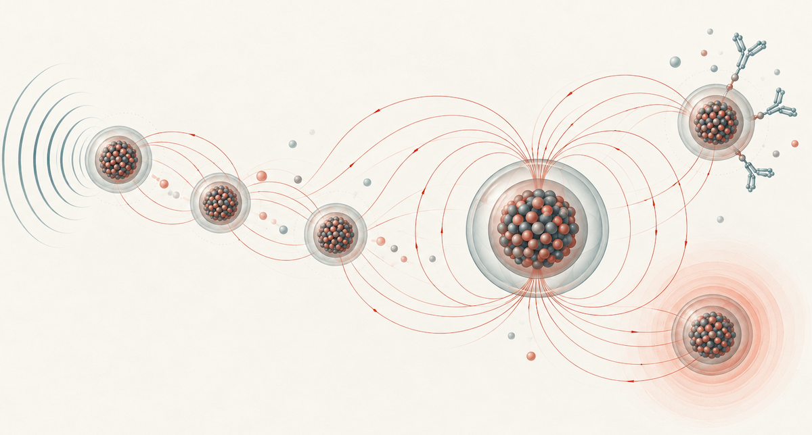
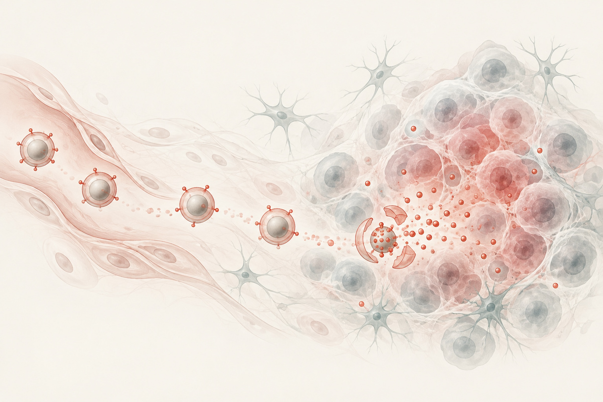
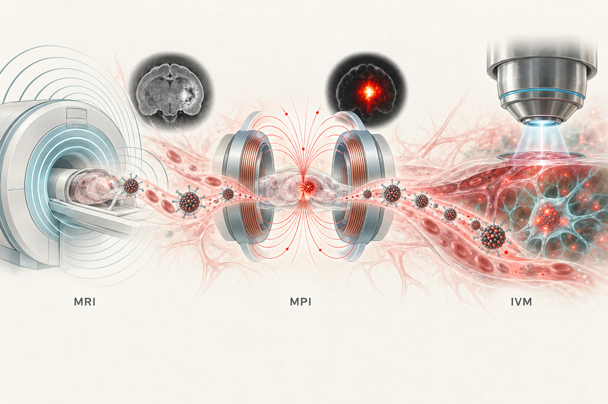

01

Magnetic nanomaterials
Designing nanoparticle composition, structure, and magnetic anisotropy for MRI, hyperthermia, and biosensing.
- Particle synthesis
- Magnetic characterization
- Structure–property relationships
02 / Research
How can we engineer nanomaterials that respond intelligently to disease—and watch them work in living systems?
01

Designing nanoparticle composition, structure, and magnetic anisotropy for MRI, hyperthermia, and biosensing.
02

Developing enzyme-responsive nanoparticles that sharpen tumor specificity, penetration, and therapeutic action.
03

Combining MRI, magnetic particle imaging, and optical imaging to quantify nano–bio interactions in vivo.
Approach
My research connects controlled material synthesis with quantitative imaging and disease models. This integrated approach helps reveal why a nanoparticle performs as it does—and how its behavior can be deliberately improved for translational applications.